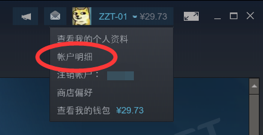
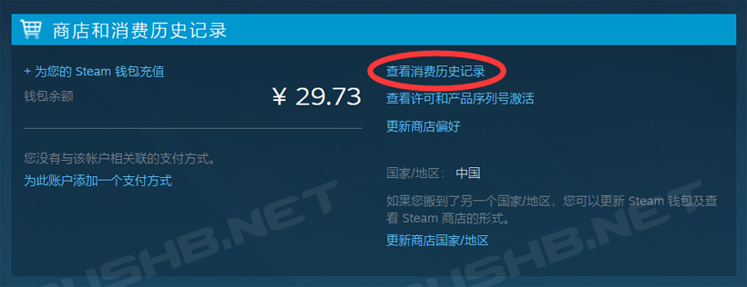
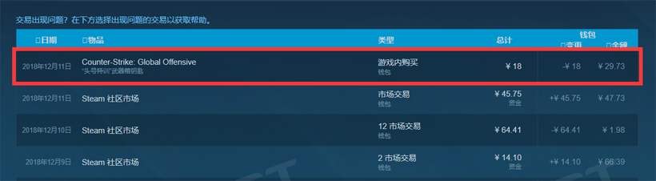
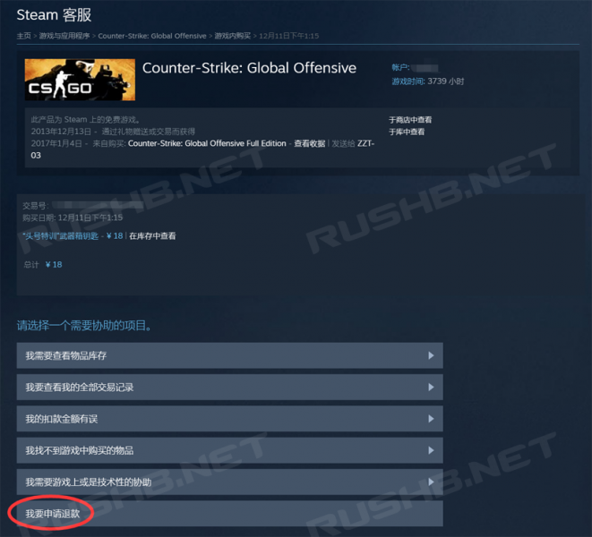
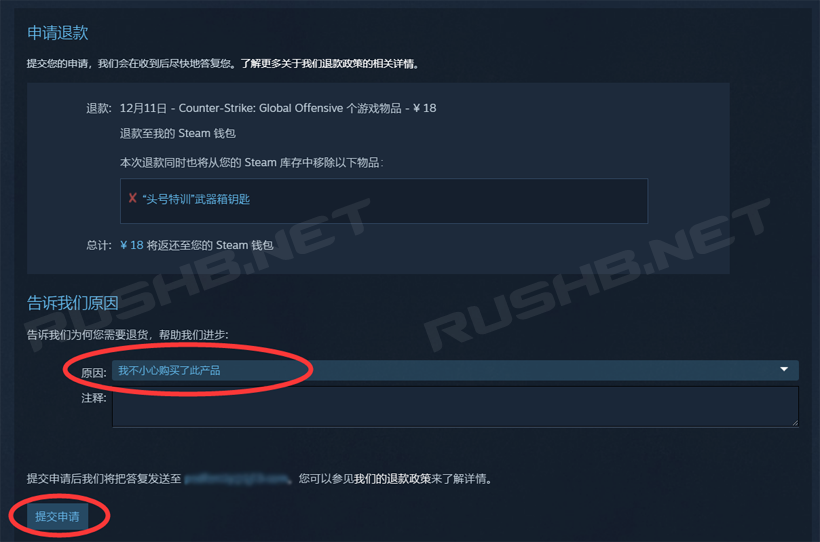
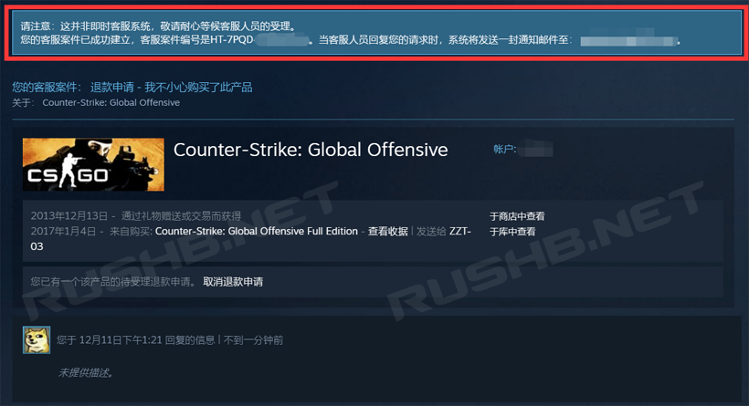

CSGO RushB中文网
CSGO RushB中文网
在CSGO中，有时玩家会想要退款在游戏中购买的物品道具，比如Major大赛买错的胶囊，或者是买了钥匙后又不想开，这时我们可以选择Steam的退款功能，将物品退款到钱包余额。
注意：
本教程仅限Steam国际服玩家，由于CSGO国服是完美世界公司自己运营，所以国服玩家使用的是和Steam区分开的充值系统，玩家充值完美点数购买的道具是无法退款的。
另外，Steam社区市场购买的物品也不支持退款，原因是买卖双方均为玩家。
以下是详细退款教程：
在退款之前，我们需要确认游戏物品是否满足退款条件（官方解释）：
Steam 将给任何由 Valve 开发的游戏中所进行的游戏内交易提供退款服务，要求在交易发生的 48 小时内，游戏内物品并未被消耗、修改或转让。
即要退款的物品购买时间不能超过两天；没有被使用；批量购买的物品总数没有变化；没有被上架市场或交易给他人；
如果不满意退款条件，否则会提示：
您所购买的物品已被消耗、交易或变更过；除非该交易中的全数物品仍在您的库存中，否则我们通常不会为游戏中的购买物品提供退费。
满足要求后，我们就可以按一下步骤退款：
首先进入Steam“帐户明细”，可以从客户端右上角进入

然后在帐户明细页面点击“查看消费历史记录”

在列表中选择要退款的物品项目，这里以头号特训钥匙为例，点击进入

进入到退款物品详情页面，点击下方的“我要申请退款”

然后在“申请退款”页面选择退款“原因”，之后点击“提交申请”

申请提交完成后，就可以等待退款到钱包余额了，届时会有Steam邮件发送到邮箱，退款时间快的2小时内，慢的一两天，等待即可。
